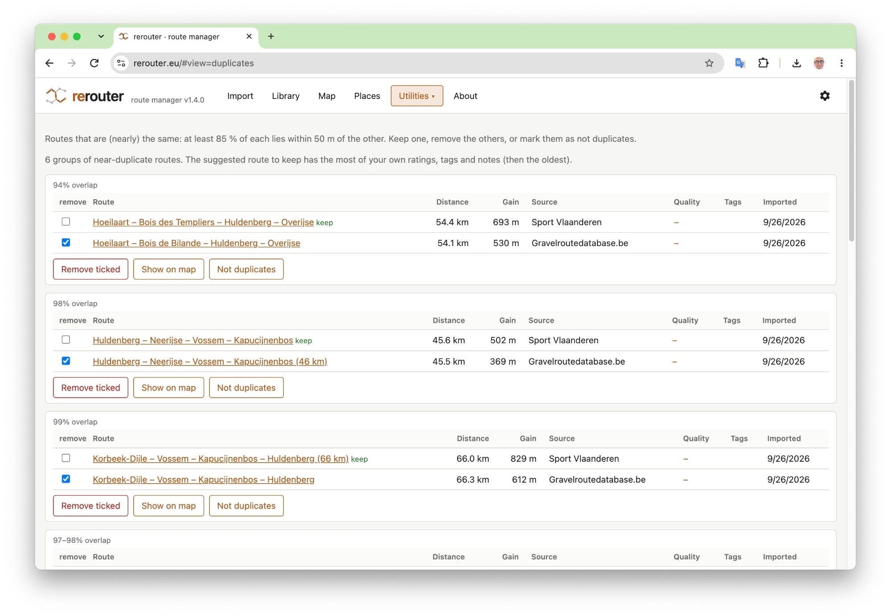

Clean up duplicate routes
Downloaded the same route from two sites? rerouter finds the routes you have twice and suggests which one to keep.
- Groups of near-duplicate routes, with the overlap, source, rating and tags of each, and hints such as “identical track” or “ridden the other way”.
- A suggestion which one to keep: the one with most of your own ratings, tags and notes, then the oldest.
- Remove the ones you tick, show them on the map, or mark them as not duplicates.
- Variants: routes that lie (almost) entirely on a longer route, such as a short loop inside a long one.

Free, nothing to install, no account: your routes stay in your browser.
More of what rerouter does
- A library for all your routesKeep your gravel, road, mountain biking and hiking routes in one place, and find the right one again in seconds.
- Import GPX, TCX and FIT filesDrag and drop your route files, many at once, whole folders or zip files, and rerouter does the rest.
- Import a route from a linkPaste a link to a route online and rerouter fetches it, fills in the source, activity and description, and adds it to your library.
- Combine routes into a new rideLike the first half of one route and the second half of another? Pick the parts you want to ride and rerouter joins them, with the connectors routed for you.
- Start a loop somewhere elseA great loop that starts on the other side of the map? Move its start to where you live, park or get off the train.
- The weather along your routeNot the weather at home, but along the route, at the moment you pass each point: so you know when to start, and which way round to ride.
- Cafés, water and toilets along your routeWhere can you get a coffee, fill your bottles or find a toilet on the way? rerouter lists the places along a route, in riding order.
- VeloViewer explorer tilesHunting explorer tiles? Import your tiles from VeloViewer, and rerouter tells you which routes in your library get you the most new ones.
- A day out with the trainRide out and take the train home, or take the train out and ride back: rerouter finds the routes in your library that fit, and the trains that go with them.
- All your routes on one mapEvery route that matches your filters on one map: see where you have ridden, and where your routes meet.
- Share a route with a linkSend a friend a link to a route: they see it on a map with its stats, and can download the GPX or add it to their own library.